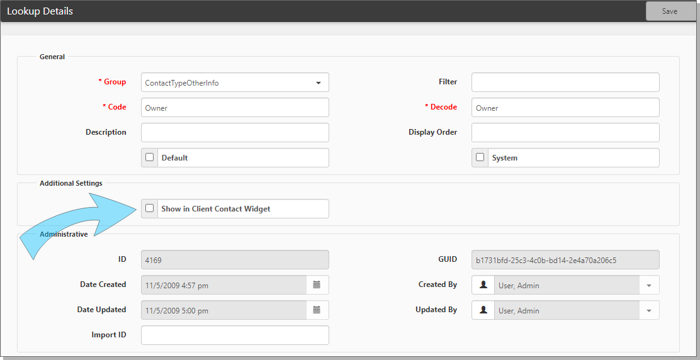

The Lookup Details form opens with the contact type you selected.
Certain contacts appear in the Client Contact Widget, but how does the system determine which contacts to show? This topic describes how to configure which contacts are displayed on the Workspace Landing Page widget.

To configure the client contact widget: